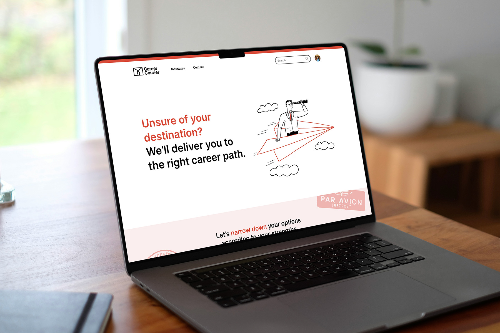

Career Guidance Tool for High School Students
Overview
Career Courier is a web application designed to help high school students in Ontario make informed decisions about their paths after graduation. It provides important information and necessary resources in a structured and well-paced manner. Instead of suggesting programs and schools based solely on the student's interests, our aim is to present all the appropriate career and training options.
This project was completed for Hackville 2024 in collaboration with Adriana Baric, Euna Lim, and Kelly Kou.
Tools
Figma, React
Timeline
Jan 2024 (36 hours)
The challenge
Helping soon-to-be high school graduates find their path
During our ideation session, we realized that everyone in our team was uncertain about what to do after high school and have had regrets regarding our decisions. Similarly, many high schools students struggle to determine their path after they graduate. They have to make their decisions early to enroll in the necessary courses and meet admission requirements, leaving little room to adapt if their plans change. Those who proceed directly to university or college may find themselves underprepared or ill-informed about post-secondary education. Since they already don't have a full idea of themselves, current career assessment methods might not be adequate to prepare them. A more effective approach would be to ensure students are well-informed about the choices they're making.
The sheer volume of information students encounter when they first start the process can be overwhelming, weighing more onto the important decision they have to make. Moreover, many existing career websites place important information behind paywalls. As students continue with their post-secondary education, they may start to regret their program and/or career choice due to information that they were unaware of at the time of their decision.
The solution
More comprehensive career guidance
With Career Courier, we aims to provide information in comprehensive and understandable formats for high school students to make well-informed decisions about their professional future. The platform holds the necessary resources to support students' decisions, facilitating connections with industry experts and showcasing available training and education options. We also eliminated the lengthy personality questions that don't really address what students need.
An interactive prototype was created using Figma then converted into React components to connect our application to a public GoDaddy domain.